Ochtrup · seit 2011
Genussmanufaktur
Ein Haus, fünf Genusswelten. Jede hat ihren eigenen Raum. Such dir einen aus und tritt ein.
Das Dach
Aus der Modezum Genuss.
Christian Kötterheinrich kam aus der Modebranche. Bei einer Studie über Passform stieß er auf eine Erkenntnis, die nichts mit Stoff zu tun hatte: Einkaufen und Genießen gehören zusammen. 2011 gründete er in Ochtrup die Genussmanufaktur. Seitdem entstehen Orte zum Verweilen, dort, wo Menschen einkaufen, bummeln und sich etwas gönnen.
- 2012Retailer-Award der ECE für das innovativste Konzept
- 2013Store of the Year des Handelsverbands HDE
- 2014Nominierung Bahnhofsshop des Jahres der Deutschen Bahn
Frooters · Smoothies und frisch gepresste Säfte
Frischgemixt.
Aus ganzen Früchten, jeden Tag frisch: rot, grün, gelb oder ganz cremig. Die Farben kommen nur vom Obst.
Fahr über die Becher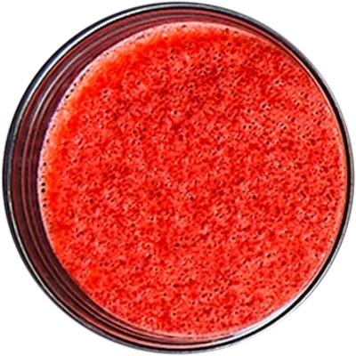
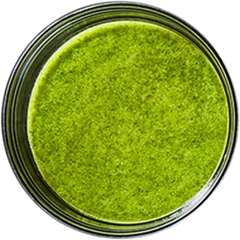
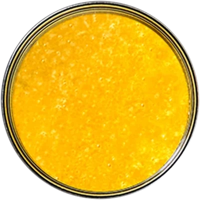
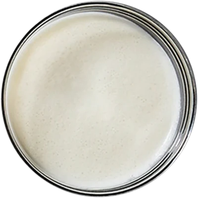
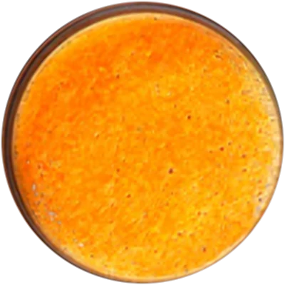
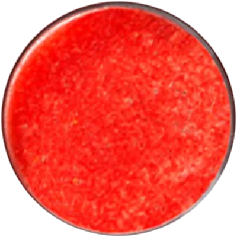
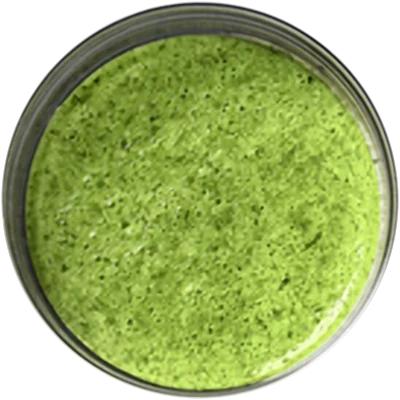
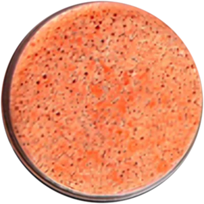
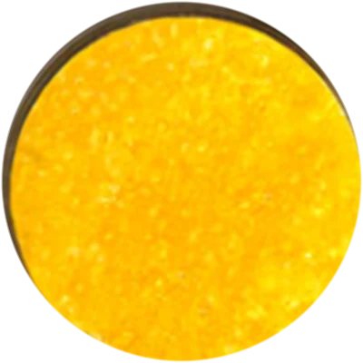
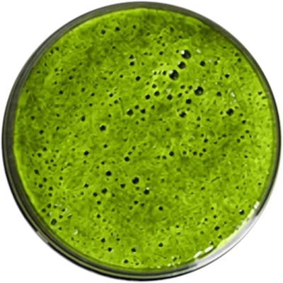
Café nyd · Osnabrück
Nyd ist dänisch für genießen.
Mitten an der Großen Straße: draußen die Fußgängerzone, drinnen beginnt die Pause.
Für den ganzen Tisch
Ube, Kuchen, Kaffee.
Der lila Ube-Drink, Karottenkuchen mit Frischkäse und ein Cappuccino mit Herz.
Herzhaft und frisch
Sauerteig & Avocado.
Knuspriges Sauerteigbrot, cremige Avocado und frische Begleiter.
Noch etwas Süßes
Karottenkuchen.
Saftig, mit Frischkäse-Topping und feinen Blütenblättern.
Komm rein
Dein Platz im Wohnzimmer.
Helles Holz, weiche Kissen, warmes Licht. Der Cappuccino steht schon auf dem Tisch.
Große Straße 27–32
Bis gleich.
Dienstag bis Samstag 10–19 Uhr, Sonntag 10–17 Uhr, Montag Ruhetag.
Café nyd · Das lila Highlight
Ube.
Sprich: „u-be“. Eine lila Knolle von den Philippinen und der Star auf der Karte im Café nyd. Woher kommt sie, warum ist sie so lila und wie schmeckt sie? In vier Schritten bis ins Glas.
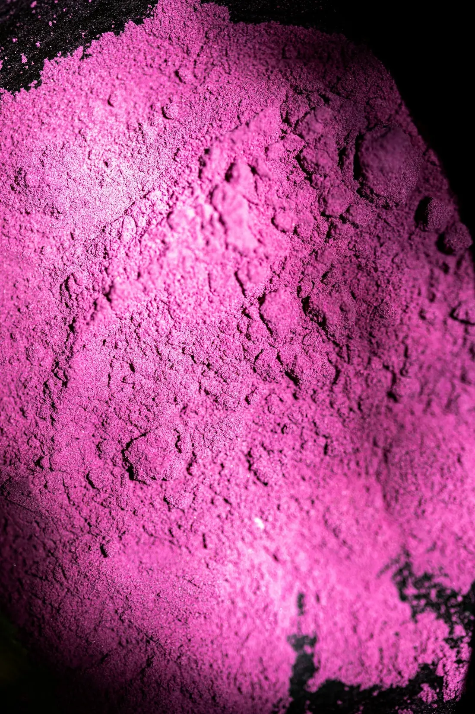
Getrocknet und gemahlen: Ube-Pulver 01Eine Knolle.
Ube ist die lila Yamswurzel, botanisch Dioscorea alata. Keine Süßkartoffel und kein Taro, sondern eine eigene Pflanze. Ihre Knolle wächst unter der Erde und ist innen tief violett.
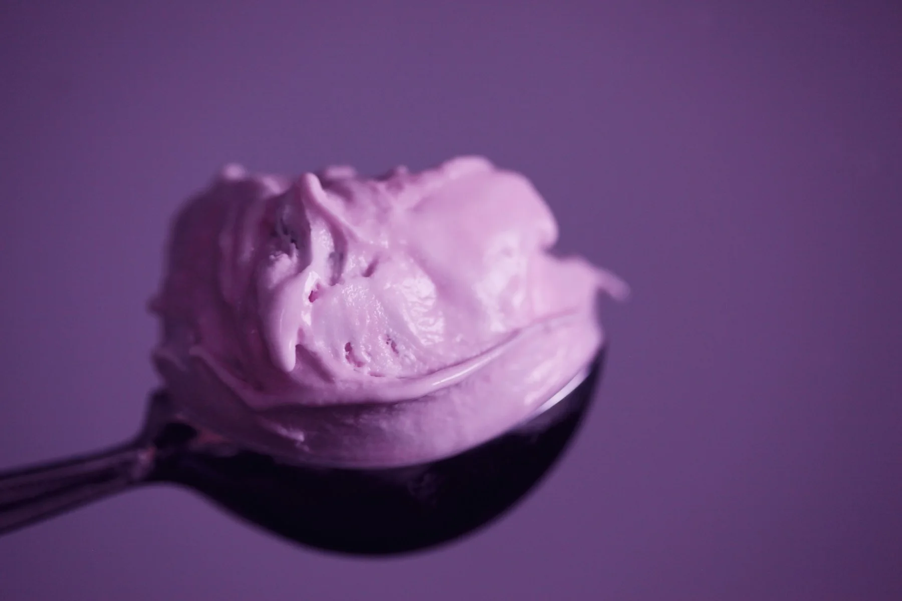
Lila Eis: so kennt man Ube auf den Philippinen 02Von den Philippinen.
Ihre Heimat ist Südostasien, vor allem die Philippinen. Dort gehört Ube seit Generationen in Eis, Cremes und Gebäck. Von dort kam sie in die Cafés der Welt.
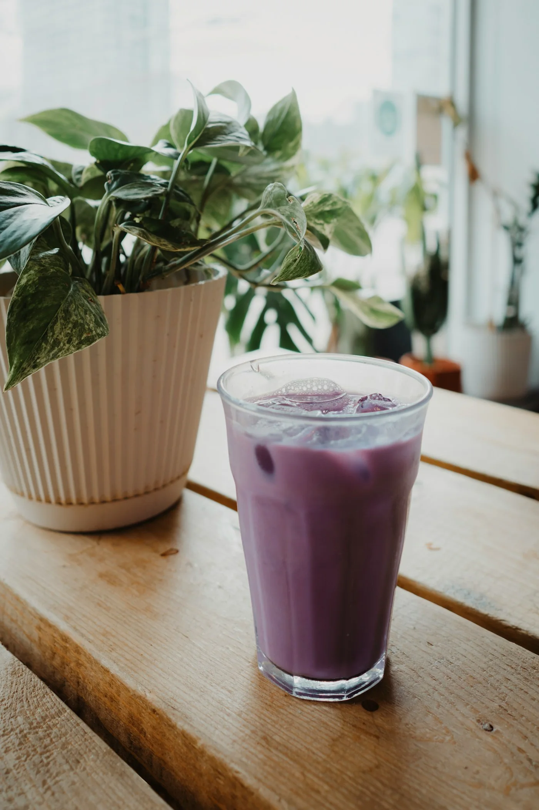
Die Farbe kommt aus der Knolle 03Natürlich violett.
Das Lila stammt von Anthocyanen. Das sind dieselben Pflanzenfarbstoffe wie in Heidelbeeren. Keine Farbe aus der Tube, sondern aus der Knolle selbst.
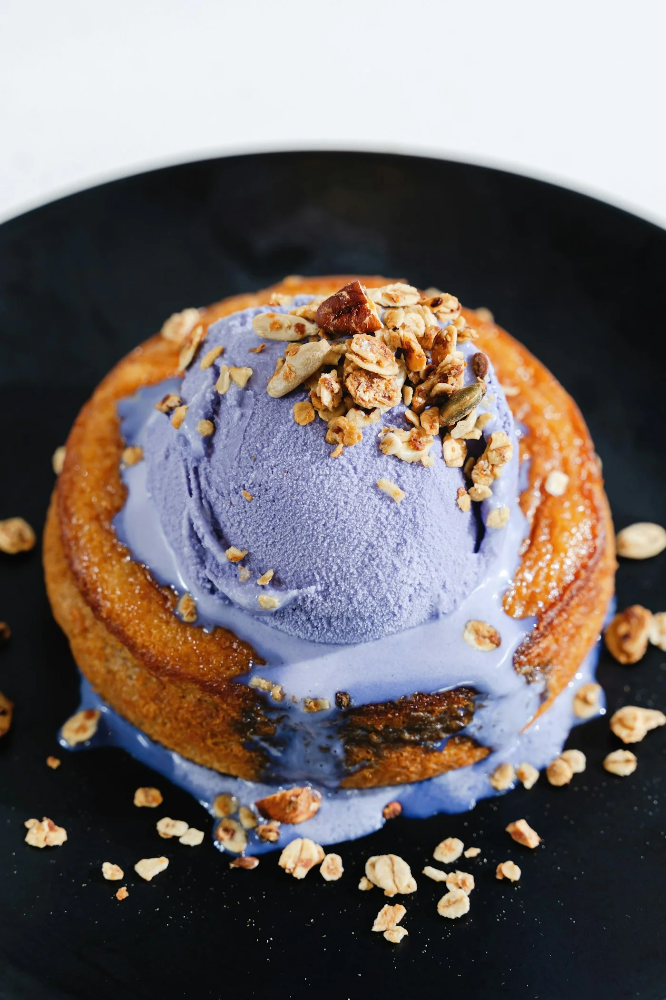
Nussig und mild süß 04Nussig, ein bisschen Vanille.
Ube schmeckt mild süß, nussig und erinnert an Vanille. Darum passt sie so gut zu Milch, Kaffee und Kuchen.
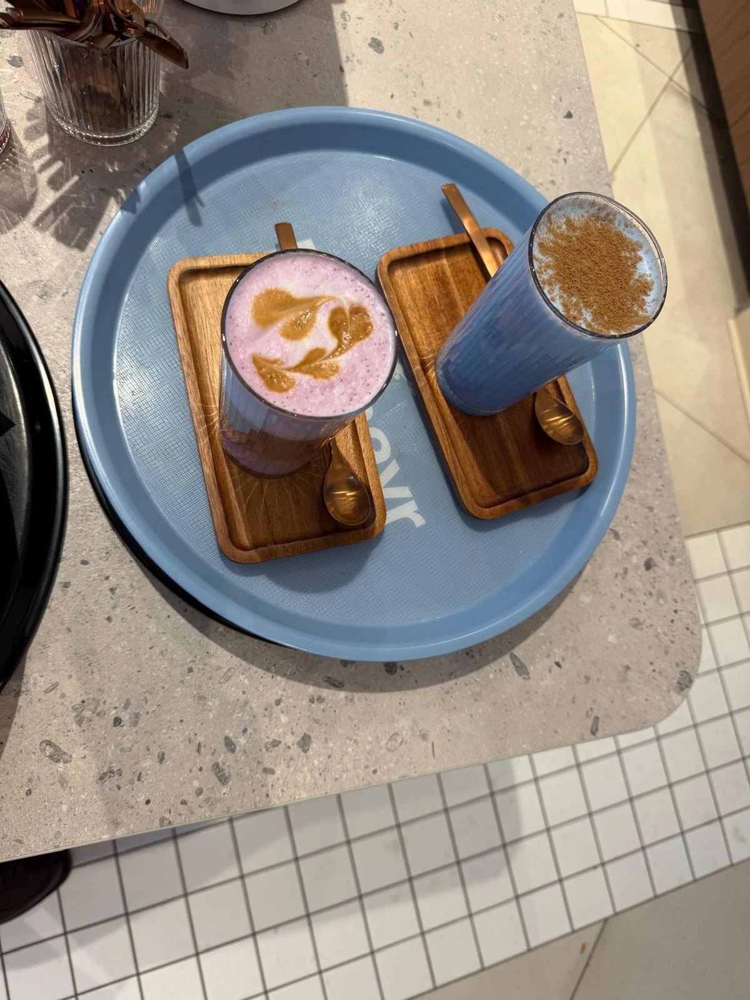
Bei uns im Glas
Der Ube-Drinkim Café nyd.
Lila, cremig und mit Muster im Schaum. Das Getränk, nach dem in Osnabrück alle fragen. Probieren an der Großen Straße 27–32.
Zum Café nyd ↗Bowlers · Das Gewächshaus
Die Reise
der Açaí.
Vom Regenwald am Amazonas bis in deine Bowl.
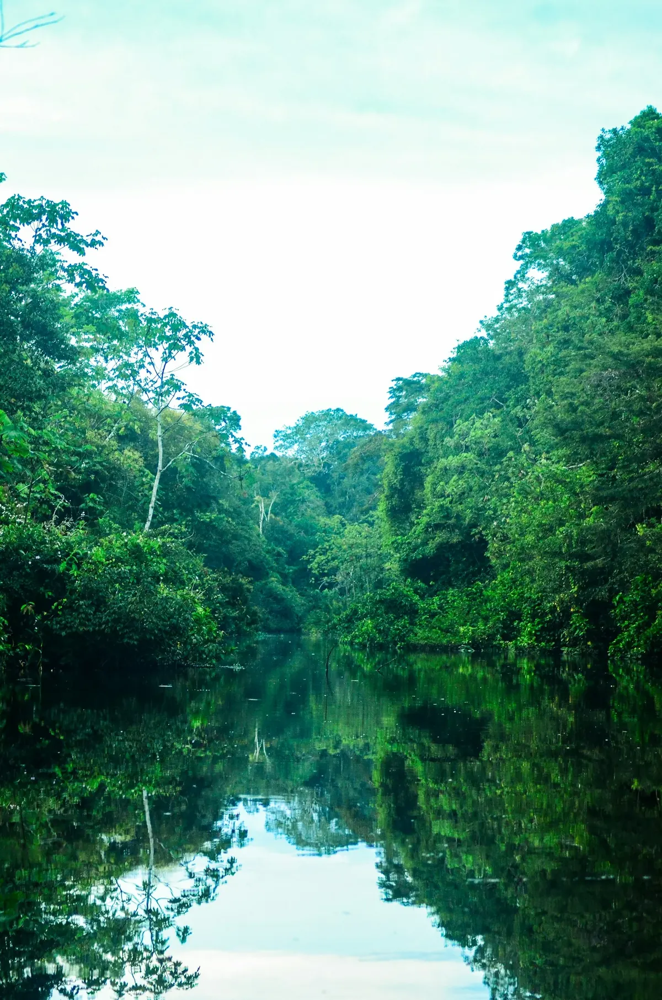
Station 1 · Herkunft
Am Amazonas.
Açaí wächst an der Palme Euterpe oleracea, vor allem im Bundesstaat Pará im Norden Brasiliens. Die schlanken Palmen stehen an Flussufern und werden über 25 Meter hoch.
Beispielbild: Rohit Tandon, Unsplash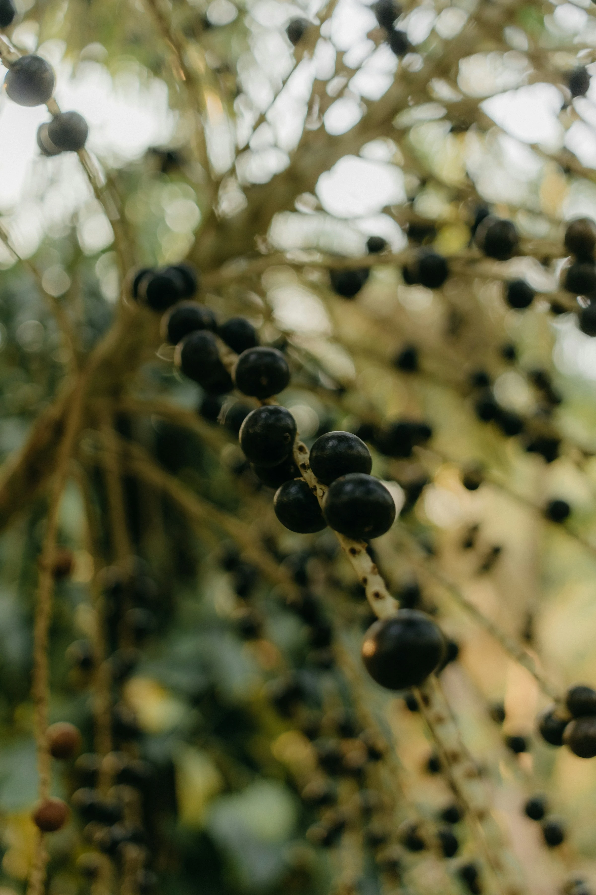
Station 2 · Ernte
Von Hand gepflückt.
Pflücker klettern die Stämme hinauf und holen die reifen Rispen herunter. Jede trägt Hunderte kleine, fast schwarze Beeren.
Beispielbilder: Kawê Rodrigues, UnsplashStation 3 · Tempo
Schnell gefroren.
Die Beeren verderben schnell. Darum werden sie direkt nach der Ernte zu Fruchtmark verarbeitet und tiefgefroren. So bleibt drin, was drin ist.
Station 4 · Powerfood
Was in der kleinen Beere steckt.
- AnthocyaneDer dunkle Farbstoff, der die Beere fast schwarz macht.
- PolyphenolePflanzenstoffe, wie sie in dunklen Beeren stecken.
- ÖlsäureOmega-9-Fett, dasselbe wie im Olivenöl.
- BallaststoffeAus dem Fruchtfleisch, machen die Bowl sämig.
- MineralstoffeKalium, Calcium und Magnesium.
- <1 g Zuckerin 100 g ungesüßtem Fruchtmark.
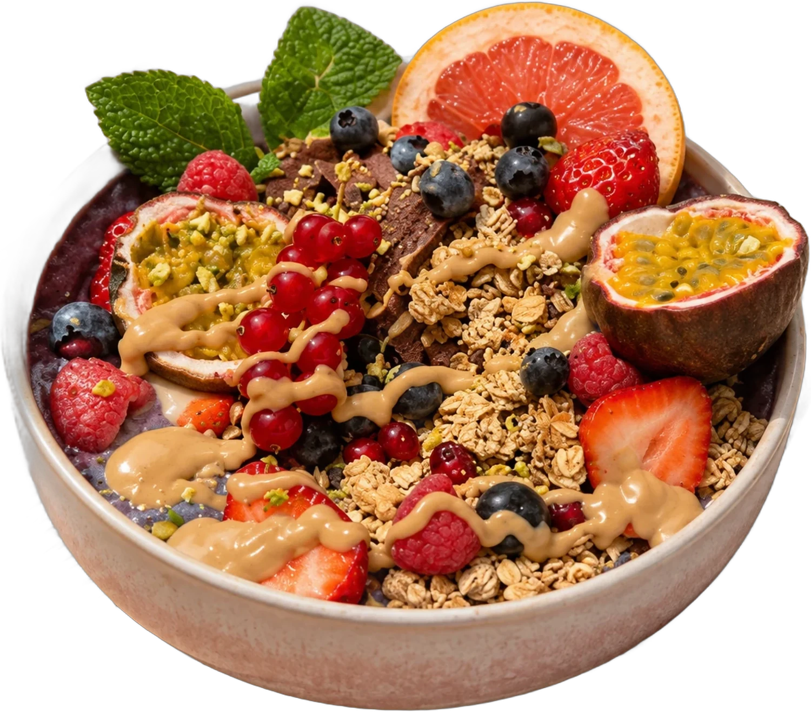
Ankunft
Die Bowl.
Gefrorenes Açaí, frische Beeren, Granola und ein Hauch Nussmus. Bald bei Bowlers.
Platzhalter: Ort, Karte und Öffnungszeiten folgen · Foto: Açaí-Bowl aus dem Café nyd
Die Terrasse · seit 2016
Pack den Korb.
- Guter Kaffee
- Belegte Brötchen
- Laugenbrezeln
- Frische Waffeln
- Kuchen
- Handgemachtes Eis
Eine kleine Pause
im Grünen.
Kaffee, belegte Brötchen, Laugengebäck, frische Waffeln, Kuchen und handgemachtes Eis. Genau das, was man beim Einkaufen braucht.
- Designer OutletOchtrup
- Modehaus BeckerGifhorn
Loaves Bakery · Unterm Dach
Loaves
Der Teig geht noch. Bald duftet es hier nach Brot.
Platzhalter: Konzept, Ort und Eröffnung folgen.